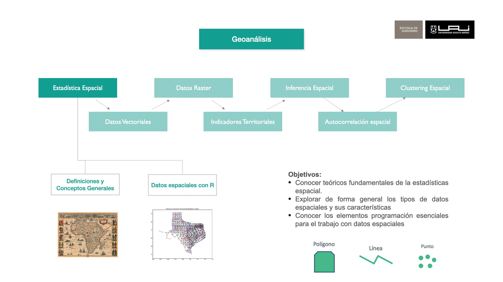
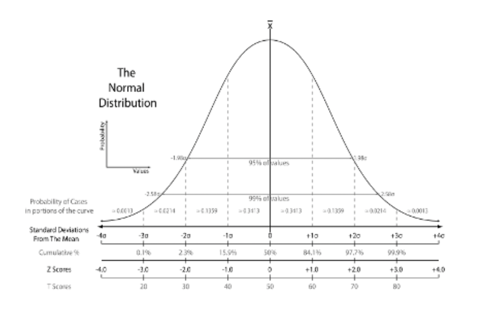
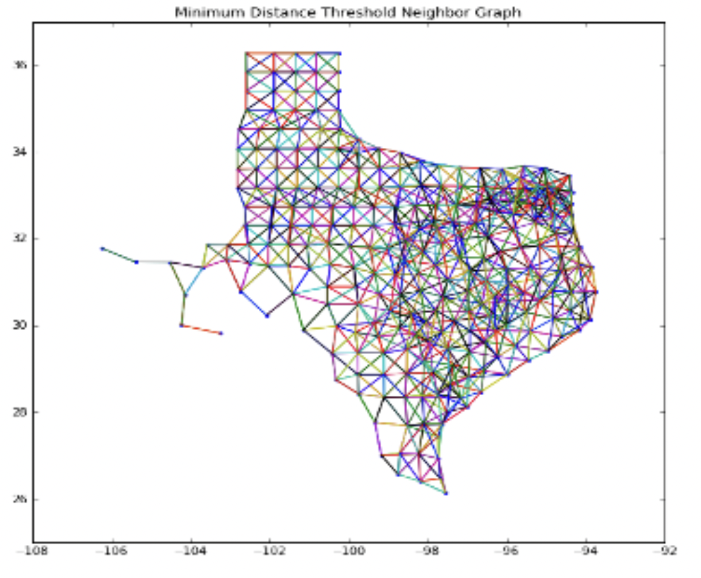
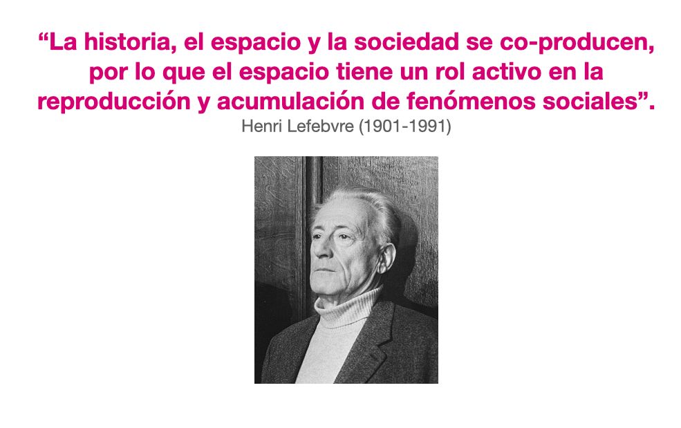
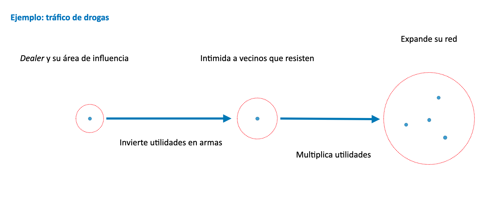
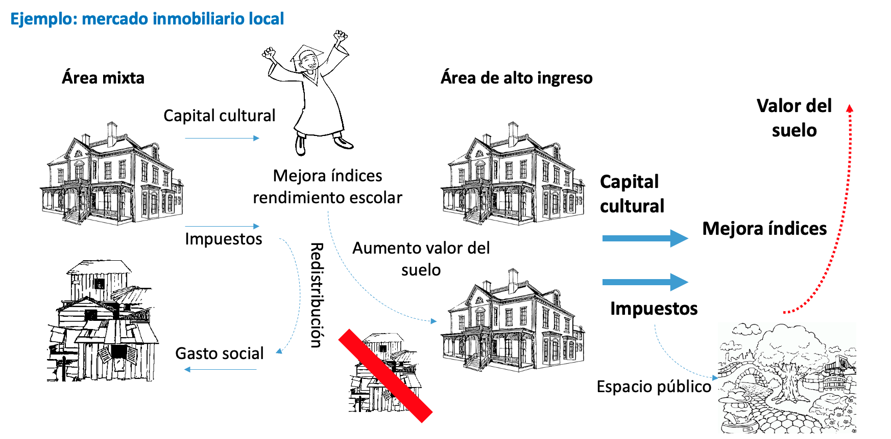
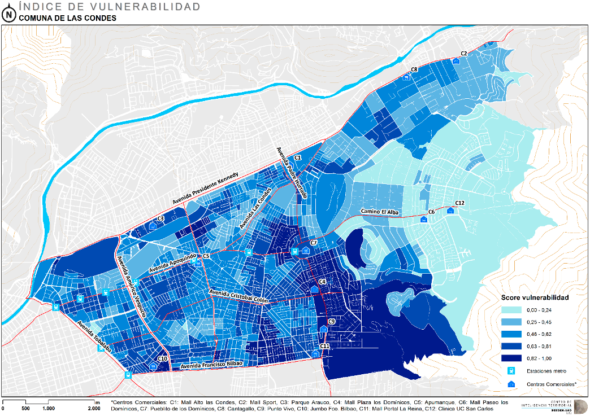
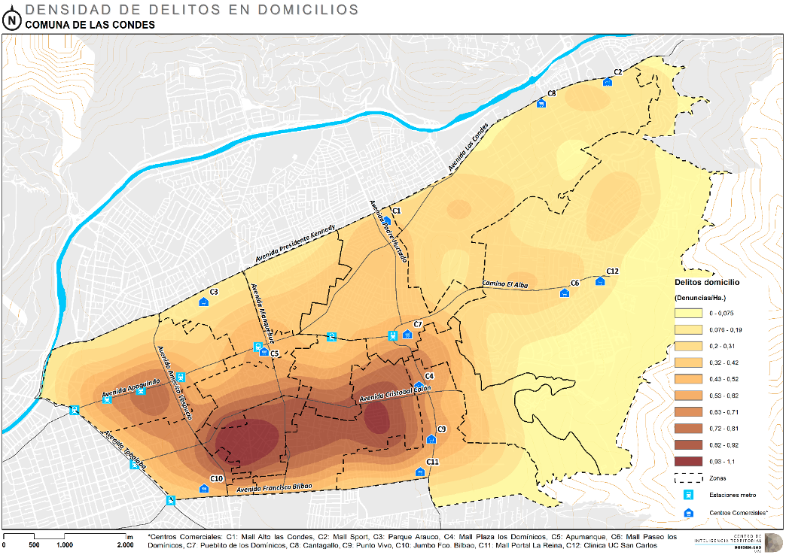
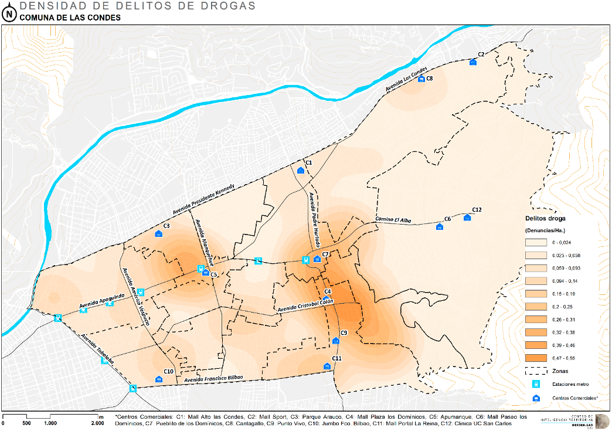
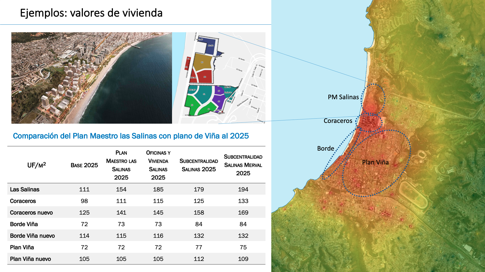

1 Estadística Espacial
Módulo 1: Teórico
1.1 Objetivos

- Conocer teóricos fundamentales de la estadística espacial.
1.2 Origen de la Estadística
Estadística deriva del italiano statista (hombre de Estado) y se desarrolla desde la antigüedad para facilitar la gestión tributaria y estimar la capacidad bélica de un reino. Ej: censos egipcios desde el 3050 a.C.
Durante la expansión de los imperios coloniales (siglos XVI - XIX) se desarrolla la estadística en estrecha relación con la cartografía, principalmente para la administración y dominio de territorios.
1.3 Definición General
La estadística es una herramienta fundamental en la ciencia de datos que nos permite comprender y analizar datos para obtener información significativa. En términos simples, es como un lenguaje que utilizamos para describir, resumir y tomar decisiones basadas en la información que los datos nos proporcionan. Al aplicar métodos estadísticos, podemos identificar patrones, tendencias y relaciones en los datos, lo que es esencial tanto para la investigación académica como para la toma de decisiones en el mundo real.
1.4 Estadística vs Estadística Espacial
La estadística en general es una disciplina amplia que se aplica a diversos tipos de datos y problemas, utilizando métodos estadísticos convencionales. La estadística espacial, por otro lado, se enfoca en datos con ubicaciones geográficas explícitas y se especializa en el análisis de la dependencia espacial y la modelización de patrones espaciales.
Estadística:
- Análisis de la estructura de datos representativos de una población (en áreas arbitrarias)
- Se basa en matemáticas relativamente complejas

Geoestadística- Análisis de relaciones de dependencia espacial entre datos georreferenciados y modelamiento de datos espacilizados.
- Complejidad de cálculo que hacía inviable su uso masivo

1.6 El Espacio y el Tiempo: Coproducción Espacio-Temporal del Bienestar
El bienestar social es resultado de una coproducción espacio-temporal: las políticas, las acciones colectivas y las dinámicas naturales configuran el territorio, que a su vez influye en las oportunidades y limitaciones de sus habitantes.
Henri Lefebvre (1901–1991) lo expresó así:

El espacio no es simplemente un escenario pasivo, sino un actor en las dinámicas sociales. Por ejemplo, la segregación urbana o la concentración delictual en ciertas áreas no son casualidad, sino resultado de una autoproducción espacial donde factores históricos, económicos y sociales se retroalimentan.
1.7 Por Qué Medir: La Importancia de las Estadísticas Territoriales
Lo que no se mide, no se gestiona.
Las estadísticas territoriales permiten entender y actuar sobre el territorio con evidencia. Sin embargo, presentan desafíos particulares. La inferencia estadística clásica asume independencia entre observaciones y aleatoriedad, pero los datos espaciales violan ambos supuestos:
- Las observaciones cercanas tienden a estar correlacionadas (Ley de Tobler).
- El espacio actúa como un soporte material indispensable para las relaciones sociales.
1.8 Ejemplos de Dependencia Espacial
1.8.1 Autoproducción: Tráfico de Drogas

1.8.2 Co-producción: Mercado inmobiliario local

1.8.3 Segregación y delincuencia



1.8.4 Valores de Vivienda
